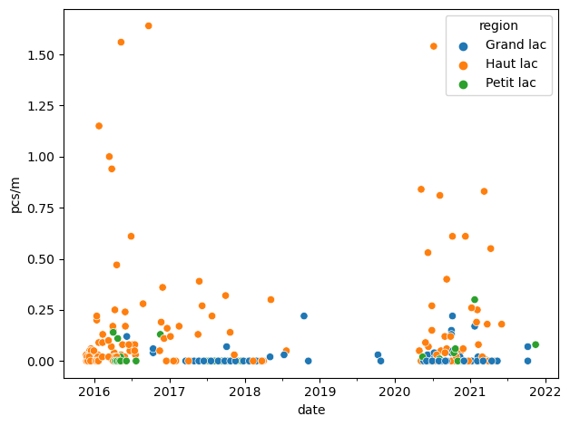
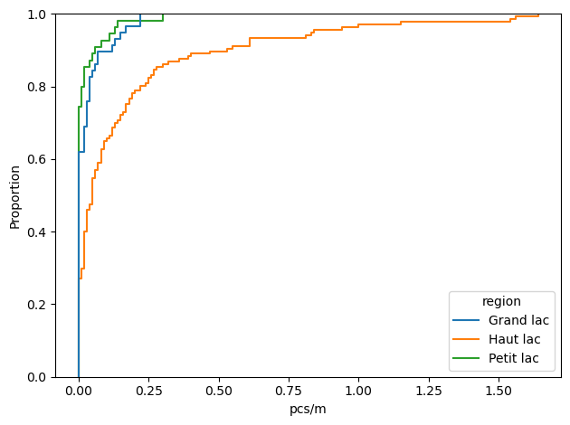

4. Plastic shotgun shell wadding#
A summary of observations on Lac Léman
Plastic wadding is commonly used in modern shotgun shells due to its durability and consistency in performance. It helps to cushion the shot or slug as it moves down the barrel, ensuring it stays centered and providing a proper seal to maximize the energy transfer upon firing.
Plastic wadding can come in various forms, such as wads or cups, and they can have different designs depending on the specific requirements of the shotgun shell and the desired performance characteristics.
When plastic wadding is left behind after shooting activities or improperly disposed of, it can find its way into water bodies and eventually wash up on beaches. Once there, it can pose risks to wildlife through ingestion or entanglement.
Essential statistics: 2015 - 2021
Effective dates from 2015-11-23 00:00:00 to 2021-11-14 00:00:00
Total found: 949
Number of samples: 250
Number of municipalities: 15
Number of unique sample locations: 38
Shotgun wadding found in 54% of samples
The average number found per sample 3, the median found 1.0
The average number found per meter of shoreline 0.1, the median found per meter of shoreline 0.02
Historical average for every 100 meters : 10, historical median 2
The historical 95% range per 100 meter {0.05: 0, 0.25: 0, 0.5: 2, 0.75: 8, 0.95: 54}
4.1. Characteristics and weight of sampling conditions#
We assume there is a relationship between how the land is used and what it is we find on the ground. Archeaologists and Anthropologists make this basic assumption every time they undertake an excavation and interpret the results in the context of other findings. This interpretation of beach litter data does exactly the same. As discussed in Near or far and the federal report IQAASL : at the national level there is strong evidence to support a correlation between the density of objects found and specific topographic features that can be isolated on a standard topographical map.
Here we consider the following features as a % of the dry-land surface area within 1 500 meters of the survey location:
Buildings: the surface area attributed to constructed spaces
Forest: the surface are attributed to woods and forest
Orchards: the surface area attributed to orchards
Public services: the surface area attributed to any area that is associated to public use, includes hospitals, sports fields, schools etc.
Undefined: the surface area has no defined use
Vineyards: the surface area attributed to growing grapes for wine making
For a detailed description of how these values are derived: Extracting land-use values
orchards
vineyards
buildings
forest
undefined
public_services
1
91%
92%
11%
72%
63%
68%
2
6%
7%
6%
14%
25%
7%
3
0%
0%
1%
0%
1%
7%
4
1%
0%
20%
9%
2%
8%
5
1%
1%
62%
5%
9%
10%
buildings
forest
orchards
public_services
undefined
vineyards
1
0.03
0.08
0.11
0.13
0.09
0.10
2
0.59
0.06
0.01
0.12
0.18
0.08
3
0.00
-
0.00
0.01
0.08
-
4
0.04
0.00
0.01
0.03
0.09
0.00
5
0.09
0.68
0.14
0.03
0.00
0.12
4.2. Regional results#
Lake Geneva is divided into three parts because of its different types of formation (sedimentation, tectonic folding, glacial erosion):
Haut Lac (‘Upper Lake’), the eastern part from the Rhône estuary to the line of Meillerie–Rivaz
Grand Lac (‘Large Lake’), the largest and deepest basin with the lake’s largest width
Petit Lac (‘Small Lake’), the most south-west, narrower and less deep part from Yvoire–Promenthoux next Prangins to the exit in Geneva
For a brief description of the geography of Lac Léman see: Wikepedia Lake Geneva


nsamples
mean
std
min
25%
50%
75%
max
Grand lac
58.00
0.03
0.05
0.00
0.00
0.00
0.03
0.22
Haut lac
137.00
0.17
0.31
0.00
0.00
0.05
0.17
1.64
Petit lac
55.00
0.02
0.05
0.00
0.00
0.00
0.01
0.30
4.3. Municipal results#
There are numerous municipalities on the lake, here we consider only the municipalities that were sampled.
Nummber of cities with two or more samples where none were found: 0
Cities where none were found, for all cities and number of samples: ['Morges' 'Rolle']
Municipal results in descending order
| pcs/m | nsamples | |
|---|---|---|
| Saint-Gingolph | 0.68 | 13 |
| Allaman | 0.14 | 3 |
| Bourg-en-Lavaux | 0.12 | 2 |
| La Tour-de-Peilz | 0.12 | 25 |
| Montreux | 0.11 | 53 |
| Vevey | 0.11 | 44 |
| Saint-Sulpice (VD) | 0.06 | 15 |
| Versoix | 0.05 | 4 |
| Genève | 0.03 | 29 |
| Préverenges | 0.01 | 15 |
| Tolochenaz | 0.01 | 3 |
| Lausanne | 0.01 | 20 |
| Gland | 0.00 | 22 |
| Morges | 0.00 | 1 |
| Rolle | 0.00 | 1 |